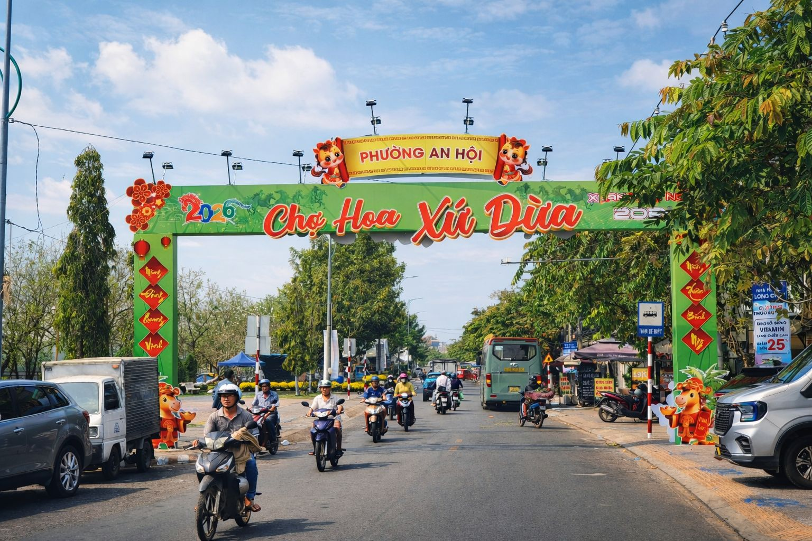

Tết Nguyên Đán ở Bến Tre mang đậm nét đặc trưng của miền Tây sông nước, vừa rộn ràng, tươi vui nhưng cũng rất ấm áp và gần gũi. Khi những ngày cuối năm đến gần, khắp các con đường, ngõ xóm đều rực rỡ sắc hoa mai vàng, hoa cúc và những chậu kiểng được chăm chút cẩn thận. Không khí Tết bắt đầu từ những phiên chợ cuối năm đông đúc, nơi người dân tất bật mua sắm bánh mứt, trái cây và chuẩn bị nguyên liệu làm bánh truyền thống. Đặc biệt, những sản phẩm từ dừa – đặc trưng của “xứ dừa” – như mứt dừa, kẹo dừa luôn xuất hiện trong mâm bánh ngày Tết. Tết ở Bến Tre không chỉ là dịp sum họp gia đình mà còn là thời điểm để người dân tưởng nhớ tổ tiên, giữ gìn các phong tục như dọn dẹp nhà cửa, gói bánh, chưng mâm ngũ quả và chúc Tết đầu năm. Bên cạnh đó, các hoạt động văn nghệ, trò chơi dân gian và những buổi họp mặt đầu xuân tạo nên bầu không khí vui tươi, gắn kết cộng đồng. Từ những nét đẹp ấy, chúng ta sẽ cùng tìm hiểu sâu hơn về các phong tục – nghi lễ truyền thống, ẩm thực ngày Tết đặc trưng, cũng như những hoạt động văn hóa đặc sắc của người dân Bến Tre trong dịp đầu xuân để cảm nhận trọn vẹn hương vị Tết nơi miền quê sông nước này.

© 2026 - Website Tết Quê Bến Tre